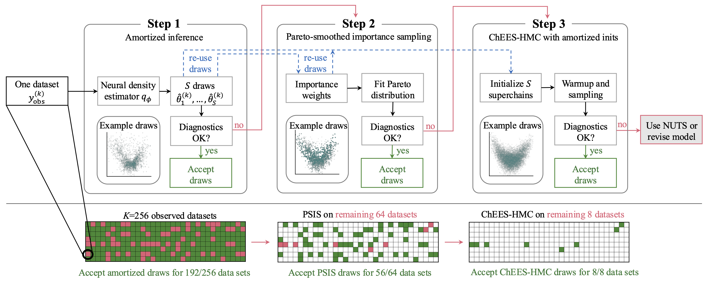

Amortized Bayesian Workflow
Abstract
Bayesian inference often faces a trade-off between computational speed and sampling accuracy. We propose an adaptive workflow that integrates rapid amortized inference with gold-standard MCMC techniques to achieve a favorable combination of both speed and accuracy when performing inference on many observed datasets. Our approach uses principled diagnostics to guide the choice of inference method for each dataset, moving along the Pareto front from fast amortized sampling via generative neural networks to slower but guaranteed-accurate MCMC when needed. By reusing computations across steps, our workflow synergizes amortized and MCMC-based inference. We demonstrate the effectiveness of this integrated approach on several synthetic and real-world problems with tens of thousands of datasets, showing efficiency gains while maintaining high posterior quality.
Figure 1: Workflow Overview

Tutorial Notebook
Follow a complete, reproducible walk-through of the amortized Bayesian workflow. This embedded tutorial is generated from examples/workflow_step_by_step.ipynb. For local setup and execution, see README instructions.
BibTeX
@article{liAmortizedBayesianWorkflow2026,
title = {Amortized {{Bayesian}} Workflow},
author = {LI, Chengkun and Vehtari, Aki and B{\"u}rkner, Paul-Christian and Radev, Stefan T. and Acerbi, Luigi and
Schmitt, Marvin},
year = 2026,
journal = {Transactions on Machine Learning Research}
}